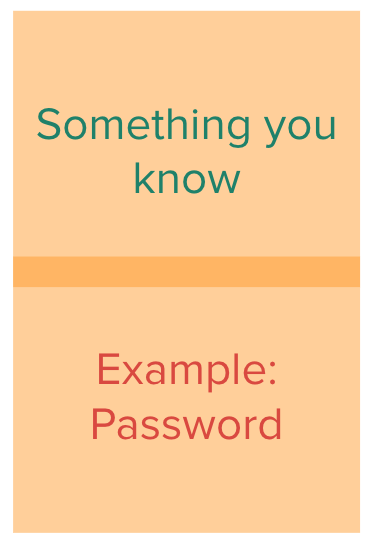
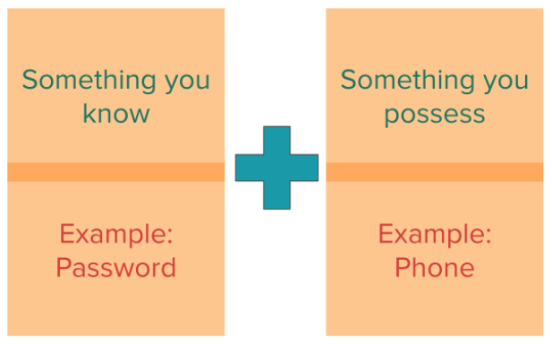
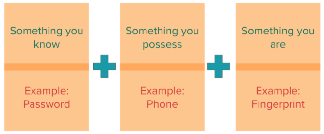

Lesson 5 - Protecting Data: Personal Strategies
At the end of this lesson, you will be able to:
- Explain how multi-factor authentication is used to protect personal data.
- Explain why software should be updated regularly to protect from computer viruses.
Personal data security
Cybercrime is widespread, and it keeps growing. A few recent numbers help show the scale of the problem:
- In 2024, the FBI's Internet Crime Complaint Center received 859,532 complaints reporting more than $16.6 billion in losses - a 33% jump from the year before. (FBI IC3 2024 Internet Crime Report)
- Consumers reported losing more than $12.5 billion to fraud and scams in 2024, and the most common way scammers first reached people was by email. (FTC Consumer Sentinel Data Book, 2024)
- There were 3,158 publicly reported data breaches in the U.S. in 2024, generating over 1.7 billion notices to people whose personal information was exposed. (Identity Theft Resource Center, 2024 Annual Data Breach Report)
Passwords
What strategies do you use when creating a good password?
Show Solution
A good password is easy to remember, but hard for someone else to guess based on knowledge they have about you. If your password is your dog's name and your birthdate, that's all personal information that someone else might be able to guess!
Weak and reused passwords are one of the most common ways attackers break into accounts. In Verizon's analysis of real-world data breaches, stolen credentials were the way in for roughly a quarter of breaches in 2024, and they've shown up in about 31% of breaches over the past decade. (Verizon 2024 Data Breach Investigations Report) That's why using a strong, unique password for each account - and adding the extra layers described below - matters so much.
What can you do to protect your data? In the sections below you will learn about two strategies to help protect your personal data: multi-factor authentication and updating your software.
Multi-factor authentication
Single Factor Authentication is only one layer of protection that is centered around something you know: your password.

Two Factor Authentication adds another layer with something you possess like a phone. Have you ever been required to put a phone number in when getting a password authenticated? Sometimes a text will be sent to your phone with a code to enter in, proving that you are the person who has the phone. This layer means someone who just guesses your password can't get into your account - they would also need access to your phone.

Multi-factor Authentication adds another layer with something physical like a fingerprint. A retina scan of your eye is another example.

These three options - something you know, something you possess, and something you are - make up multi-factor authentication, which involves at least two of these options (and preferably all three).
If someone tried to access your account, they would be required to know your password, have access to your phone, and your fingerprint!
Update your software
To help prevent viruses you can use virus scanning software and update system software. You should keep all of your software updated! Data protection is a moving target. It's not a one-and-done process. It's not enough to install virus protection software and never think about it again! New viruses and threats are constantly being developed - you need to keep your software up to date and use the best authentication practices you can in order to keep your data safe!